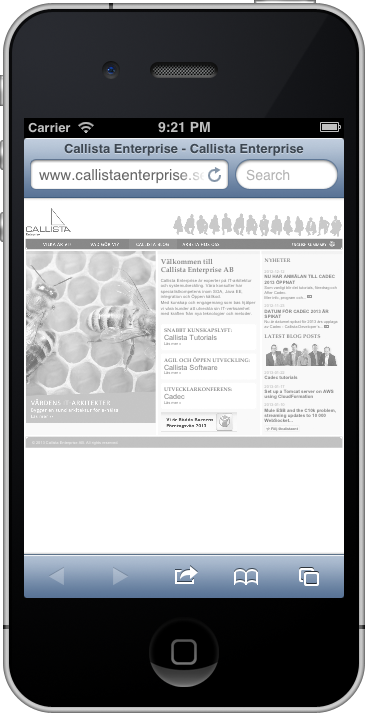
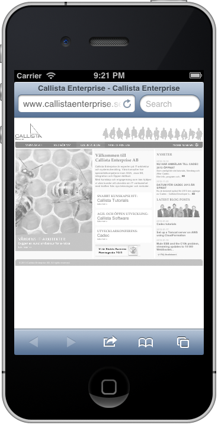

Responsive Web Design
An app is not enough
Joakim Kemeny
@joakimkemeny
 

Hello and welcome to the presentation "An app is not enough!"
There is a lot of discussions regarding apps vs sites and native vs web. While that debate is interesting the most important thing is getting your message across to your customers and building useful applications that your users will use, and love to use, regardless of what kind of device they are using.
In this talk I thought I'd show you a way you can do this today without throwing away everything you know. There will be code and there will be some examples so I hope you will like it.
My name is Joakim Kemeny and I work as a consultant with front end development at Callista Enterprise. We have a small office here in Stockholm but I work for our office in Gothenburg. Web and mobile are part of every assignment these days and even if I don't do public web sites lite SVT or Boston Globe every day I still benefit from the techniques that I'm going to show you today so hopefully I will be able to give you some useful tips.
So let's get started.

This is the web site for Callista Enterprise and it's probably this way it is supposed to look. It's not a very hip site but it's quite normal and there are a lot of sites that looks like this.

This is also our site but it has been scaled to fit. Still perfectly usable.

This is also our site. I guess our brand color is white? At lease there is an awful lot of it if you look at the site like this.
This is also our site. That's not really usable but I think I can see a bee in the image. Let's zoom in.
Yes, definitely a bee hive so I guess that Callista is in the bee hive business. Let's swipe and look at the rest of the page.

That's better, now it makes sense (if you understand Swedish of cause).
You may think it's a little bit strange that I choose our web site to show the kind of problems that the web faces today. If our site had worked as I would like it to do it would be a plain marketing plug but now it's quite the opposite, right?
The fact is that I didn't choose this site because it's good or bad, I choose it because it's a really good example of how the web works today. Hopefully I will not be able to use this example for long.
- 1Ignore mobile Visitors will use a computer anyway
So that was how I think that most of the web works today. Most of the sites out there simply ignores mobile. Most people will use a computer anyway, right?
There are two other ways that we use to tackle mobile though.
- 1Ignore mobile Visitors will use a computer anyway
- 2Create m.company.com Mobile visitors are only interested in a subset of the information
First. We can always create a m.company.com site. We can show a phone number and maybe the opening hours if it's a site for a store. No mobile users want all information available on the desktop site, right?
- 1Ignore mobile Visitors will use a computer anyway
- 2Create m.company.com Mobile visitors are only interested in a subset of the information
- 3Create an app Redirect all mobile visitors to the app stores
Or maybe you have a lot of money. A new budget is about to start and you need to spend money to get new money so lets create an app. And while we are at it, let's detect mobile users on our normal web site and redirect them all to the app stores. Everybody wants to download our app, right?
So let’s dive a little bit deeper into these paths that you may take.
Ignoring mobile is…
So let's start with ignoring mobile.
If this was a conference for management I would probably need to add 15 slides with charts and number to backup this statement but since we are at the best developer conference in Sweden I think that we can all agree that ignoring mobile is just stupid.
Ignoring mobile is…
Stupid!
Get the facts at www.lukew.com
Mobile is the future and if you still want the facts I suggest you checkout Luke Wroblewski's site where he have a lot of numbers about this.
I will add some links like this throughout the presentation so look out for them.
But let's not linger in the past, let's move forward.
- 1Ignore mobile Visitors will use a computer anyway
- 2Create m.company.com Mobile visitors are only interested in a subset of the information
- 3Create an app Redirect all mobile visitors to the app stores
Let's move on to the next candidate on the list.
Creating m.company.com is…
So, a separate mobile site, that sounds good right? It can be in some cases but I have to say that I'm not convinced.
On of the companies that was early adopters of this approach was Swedish Radio (SR). I even think they wan an award for this a couple of years back.
However I was traveling by car about a half year ago or so. All of the sudden we had to stop due to a traffic accident. Of cause I picked up my phone and started looking for information about this and ended up on Swedish Radio Skaraborg.

I was really happy about this because even though I don't think you can see much here I actually thought I could see something about the traffic. I zoomed in and yes, there was an entry about a traffic accident on E20 down there.
Then the page disappeared, and this page appeared instead.

So they detected that I was using a mobile browser and redirected me to their mobile site. The only problem was that the page was not available in the mobile version so no information for me.
More examples at wtfmobileweb.com
There are so many examples of when the mobile experience really fails and you can find more at this link.
Creating m.company.com is…
This is the problem with the m.company.com approach. You have to maintain two different sets of pages and that is doomed to fail.
So creating m.company.com is, well, it's not great.
Creating m.company.com is…
Not great!
- 1Ignore mobile Visitors will use a computer anyway
- 2Create m.company.com Mobile visitors are only interested in a subset of the information
- 3Create an app Redirect all mobile visitors to the app stores
So that leaves us with the app way.
Creating an app is…
Apps can be really great. I love developing iOS apps and in many cases I prefer an app over the web and I guess this leads us to the App vs Site discussion.
For me there is no single answer but when question arises I tend to lean on these questions for guidance.
Create an App or a Site?
- Will users use it every day?
- Should it talk to the users?
- Does it need device access?
How often am I going to use the application. I have 113 apps installed on my phone and it's not uncommon for people to have more. I don't want any more apps if I'm not going to use it often.
Create an App or a Site?
- Will users use it every day?
- Should it talk to the users?
- Does it need device access?
The next question is if the application is going to talk to me? By this I mean push notification.
Create an App or a Site?
- Will users use it every day?
- Should it talk to the users?
- Does it need device access?
The final question is of cause if the application needs access to my device. Web sites can do some things but they will always be playing catchup with native applications.
There are of cause other factors as well but they are more of a greyzone to me but if none of these are true, why create an app?
Create an App or a Site?


So here is an example. Here are two companies that have apps but no mobile site. Did they make the right choice?
First we have Systembolaget. I don't know if there are anybody in the audience that are not familiar with Systembolaget but it's one of two places you get your beer, wine and liquor in Sweden, the other is of cause Germany.
They have a great app. But will I use it everyday? Hopefully not. Do I want it to talk to me? Hey, we are running out of beer, hurry up before it's to late? No, not really. Does it need access to my device, I can't see why. So this a clear web site for me.
Create an App or a Site?
Next is Västtrafik, the company that i responsible for buses, trams and trains in western of Sweden and are famous for how easy it is to pay them the right amount of money.
I use it everyday and I guess most people that travel a lot do. And wouldn't it be great if you could pick your favourite routes and be notified if you normal bus is late? It doesn't really need access to my phone yet but NFC would be great. So for me this is a clear app.
Create an App or a Site?
So this is one way of looking at it. The other is that it’s really hard to create a mobile app today. Let’s look at Android for a minute.
3997 different Android devices
Source opensignalmaps.com/reports/fragmentation.php
This picture is a little bit old now but it comes from a report from OpenSignalMaps where they tracked half a million downloads of their app. What they found was 3 997 different Android devices. Many of them are of cause not that different since they are considered to be different if they are from different manufacturers, have different version number, have different resolution, and so on, but still. This is remarkable.
Some consider this a problem for open source, other see it the other way around but I think we can agree that it’s a challenge.
Android screen resoultions

Source opensignalmaps.com/reports/fragmentation.php
An other way to look at the same report is to only focus on screen resolution. It reaches from 200 pixels to over 2000 and everything in between. How can we create apps that are flexible enough to handle this?
Pixel density
Finally we have our newest friend in let’s-make-life-hard-for-the-developer-world – pixel densities. Phones have been struggling with this for a while now where a pixel is not always a pixel. But now when the new tablets and computers also are starting to use this technique you really notice the difference.
Pixel density
Apple have two different pixel densities.
Pixel density
Android have four or five depending on how you look at it.
Pixel density
But it’s hard and we really need to make our apps or web sites really really flexible.
Creating an app is…
So where does this leave us with creating apps.
It’s definitely an option but it’s hard to make apps that are flexible enough and for some use cases I don’t think it’s feasible at all.
So creating an app is, you should probably see this one coming.
Creating an app is…
Not enough!
Not enough!